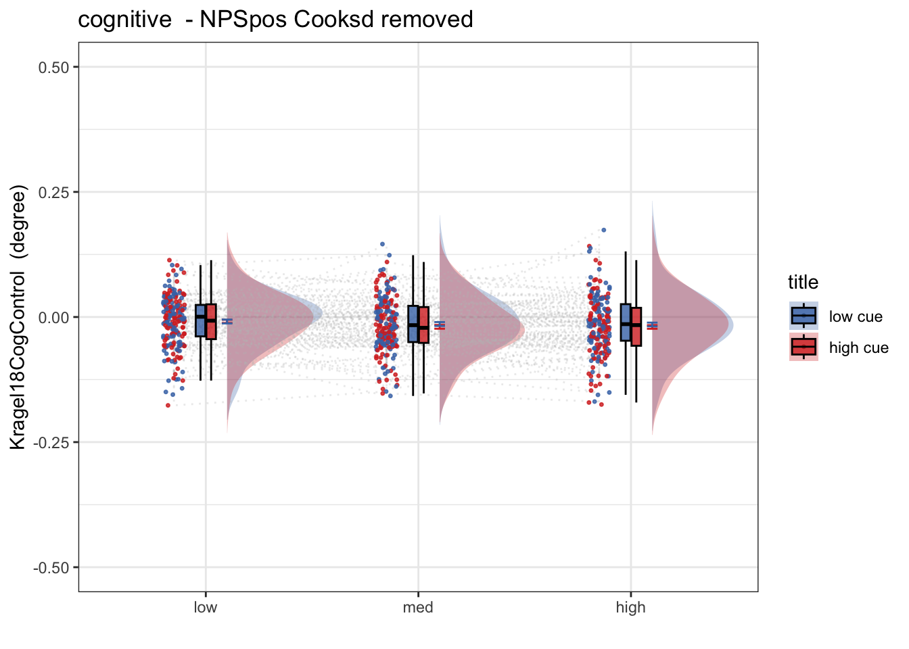

Chapter 34 [fMRI] Cognitive signature ~ single trial
author: "Heejung Jung"
date: "2023-03-04"Step 1: Common parameters
# signature-Kragel18CogControl_sub-all_runtype-pvc_event-stimulus
# step 1: load data
for (signature_key in c("Kragel18CogControl")) {
#c("NPS", "NPSpos", "NPSneg", "VPS", #"VPSnooccip", "ThermalPain", "MechPain", "GeneralAversive", "AversiveVisual"
# "ZhouVPS", "PINES", "GSR", "GeuterPaincPDM")) {
dv_keyword = signature_key
signature_name = signature_key
# step 1: common parameters _______
main_dir <- dirname(dirname(getwd()))
#signature_key = "NPSpos"
analysis_folder = paste0("model37_iv-task-stim_dv-KragelCogControl")
sig_name <-
Sys.glob(file.path(
main_dir,
"analysis/fmri/nilearn/signature_extract",
paste0(
"signature-",
signature_key,
"_sub-all_runtype-pvc_event-stimulus.tsv"
)
)) # nolint
print(sig_name)
analysis_dir <-
file.path(main_dir,
"analysis",
"mixedeffect",
analysis_folder,
as.character(Sys.Date())) # nolint
dir.create(analysis_dir,
showWarnings = FALSE,
recursive = TRUE)
savedir <- analysis_dir
# step 2: load data
df = read.csv(sig_name)
sig_df = df %>% separate(
singletrial_fname,
sep = "_",
c(
"sub",
"ses",
"run",
"runtype",
"event",
"trial",
"cuetype",
"stimintensity"
)
)
sig_df = sig_df %>% separate(
stimintensity,
into = c(NA, "stimintensity"),
extra = "drop",
fill = "left"
)
pvc <- simple_contrasts_singletrial(sig_df)
pvc$task[pvc$runtype == "runtype-pain"] <- "pain"
pvc$task[pvc$runtype == "runtype-vicarious"] <- "vicarious"
pvc$task[pvc$runtype == "runtype-cognitive"] <- "cognitive"
pvc$task <- factor(pvc$task)
# step 3: parameters
taskname = "all"
plot_keyword = "stimulusintensity"
ggtitle_phrase = "(3 tasks x 3 stimulus intensity)"
pvc$task = factor(pvc$task)
plot_keys <- list(
sub_mean = "mean_per_sub",
group_mean = "mean_per_sub_norm_mean",
legend_keyword = "stimulus intensity",
se = "se",
subject = "sub",
ggtitle = paste0(
str_to_title(signature_key),
" dot product: ",
str_to_title(taskname),
' ',
ggtitle_phrase,
" (N = ",
length(unique(pvc$sub)),
")"
),
title = paste0(
str_to_title(signature_key),
" - ",
str_to_title(plot_keyword)
),
xlab = "",
ylab = paste(signature_key, " (dot product)"),
ylim = c(-250, 500)
)
# step 4: within between summary
groupwise <- data.frame()
subjectwise <- data.frame()
summary <- summary_for_plots_PVC(
df = pvc,
# taskname = taskname,
groupwise_measurevar = plot_keys$sub_mean,
# "mean_per_sub",
subject_keyword = plot_keys$subject,
# "sub",
model_iv1 = "task",
model_iv2 = "stim_ordered",
dv = signature_key #"NPSpos"
)
subjectwise <<- as.data.frame(summary[[1]])
groupwise <<- as.data.frame(summary[[2]])
if (any(startsWith(dv_keyword, c("expect", "Expect")))) {
plot_keys$color <- c("#1B9E77", "#D95F02", "#D95F02")
} else {
plot_keys$color <- c("#4575B4", "#FFA500", "#D73027")
}
# step 5: plot
iv2 = "stim_ordered"
iv1 = "task"
taskname = "all"
if (any(startsWith(dv_keyword, c("expect", "Expect")))) {
color <- c("#1B9E77", "#D95F02", "#D95F02")
} else {
color <- c("#4575B4", "#FFA500", "#D73027")
}
subject_mean <- "mean_per_sub"
sub_mean = subject_mean
group_mean <- "mean_per_sub_norm_mean"
se <- "se"
ylim <- c(-25, 26)
subject <- "sub"
ggtitle_phrase <- "(3 tasks x 3 stimulus intensity)"
ggtitle <-
paste0(
str_to_title(signature_name),
" dot product: ",
str_to_title(taskname),
' ',
ggtitle_phrase,
" (N = ",
length(unique(pvc$sub)),
")"
)
title <-
paste0(str_to_title(dv_keyword),
" - ",
str_to_title(plot_keys$legend_keyword))
xlab <- ""
plot_keyword = "stimintensity"
ylab <- paste(signature_name, " (dot product)")
plot2_savefname <- file.path(
analysis_dir,
paste(
"signature_task-",
taskname,
"_event-",
plot_keyword,
"_dv-",
signature_key,
"_",
as.character(Sys.Date()),
".png",
sep = ""
)
)
p <- plot_halfrainclouds_twofactor(
subjectwise,
groupwise,
iv1,
iv2,
subject_mean,
group_mean,
se,
subject,
ggtitle,
title,
xlab,
ylab,
taskname,
ylim,
w = 10,
h = 6,
dv_keyword,
color,
plot2_savefname
)
p
}## [1] "/Users/h/Dropbox (Dartmouth College)/projects_dropbox/social_influence_analysis/analysis/fmri/nilearn/signature_extract/signature-Kragel18CogControl_sub-all_runtype-pvc_event-stimulus.tsv"34.1 load behavioral data
main_dir = dirname(dirname(getwd()))
print(main_dir)## [1] "/Users/h/Dropbox (Dartmouth College)/projects_dropbox/social_influence_analysis"datadir = file.path(main_dir, 'data', 'beh', 'beh02_preproc')
taskname = '*'
subject_varkey <- "src_subject_id"
iv <- "param_stimulus_type";
iv_keyword <- "stim";
dv <- "event04_actual_angle"; dv_keyword <- "outcome"
exclude <- "sub-0001|sub-0003|sub-0004|sub-0005|sub-0025|sub-0999"
p.df <- load_task_social_df(datadir, taskname = "pain", subject_varkey, iv, dv, exclude)
v.df <- load_task_social_df(datadir, taskname = "vicarious", subject_varkey, iv, dv, exclude)
c.df <- load_task_social_df(datadir, taskname = "cognitive", subject_varkey, iv, dv, exclude)
p.df2= p.df %>%
arrange(src_subject_id ) %>%
group_by(src_subject_id) %>%
mutate(trial_index = row_number())
data_p <- p.df2 %>%
group_by(src_subject_id, session_id, param_run_num) %>%
mutate(trial_index = row_number(param_run_num))
v.df2= v.df %>%
arrange(src_subject_id ) %>%
group_by(src_subject_id) %>%
mutate(trial_index = row_number())
data_v <- v.df2 %>%
group_by(src_subject_id, session_id, param_run_num) %>%
mutate(trial_index = row_number(param_run_num))
c.df2= c.df %>%
arrange(src_subject_id ) %>%
group_by(src_subject_id) %>%
mutate(trial_index = row_number()-1)
data_c <- c.df2 %>%
group_by(src_subject_id, session_id, param_run_num) %>%
mutate(trial_index = row_number(param_run_num) )
p.sub <- data_p[,c("src_subject_id", "session_id", "param_run_num", "param_task_name", "event02_expect_angle", "param_cue_type", "param_stimulus_type", "event04_actual_angle", "trial_index")]
v.sub <- data_v[,c("src_subject_id", "session_id", "param_run_num", "param_task_name", "event02_expect_angle", "param_cue_type", "param_stimulus_type", "event04_actual_angle", "trial_index")]
c.sub <- data_c[,c("src_subject_id", "session_id", "param_run_num", "param_task_name", "event02_expect_angle", "param_cue_type", "param_stimulus_type", "event04_actual_angle", "trial_index")]
# sub, ses, run, runtype, event, trial, cuetype, stimintensity
# src_subject_id, session_id, param_run_num, param_task_name, event02_expect_angle, param_cue_type, param_stimulus_type, event04_actual_angle
pvc.sub = rbind(p.sub, v.sub, c.sub)pvc.sub$trial_ind <- pvc.sub$trial_index -1
pvc.sub$sub <- sprintf("sub-%04d", pvc.sub$src_subject_id)
pvc.sub$ses <- sprintf("ses-%02d", pvc.sub$session_id)
pvc.sub$run <- sprintf("run-%02d", pvc.sub$param_run_num)
pvc.sub$runtype <- sprintf("runtype-%s", pvc.sub$param_task_name)
pvc.sub$trial <- sprintf("trial-%03d", pvc.sub$trial_ind)
pvc.sub[c('cue', 'DEPc')] <- str_split_fixed(pvc.sub$param_cue_type , '_', 2)
pvc.sub$cuetype <- sprintf("cuetype-%s", pvc.sub$cue)
pvc.sub[c('stimintensity', 'DEP')] <- str_split_fixed(pvc.sub$param_stimulus_type , '_', 2)
# merge
pvc.beh <- pvc.sub[,c("sub", "ses", "run", "runtype", "trial", "cuetype", "stimintensity","event02_expect_angle", "event04_actual_angle")]
df_merge <- merge(pvc, pvc.beh,
by.x = c("sub", "ses", "run", "runtype", "trial", "cuetype", "stimintensity"),
by.y = c("sub", "ses", "run", "runtype", "trial", "cuetype", "stimintensity")
)34.2 dfmerge stats
#summary(df_merge)
#sub, ses, run
subset = df_merge[ , c("sub", "ses", "run")]
#apply(subset, 2, table)
# subset %>%
# group_by(sub, ses) %>%
# summarise(count = length(unique(run)))
# # summarize(freq = unique(run)) %>%
t <- unique(subset, by = c("sub", "ses"))
unique(t, by = c("sub"))## sub ses run
## 1 sub-0002 ses-03 run-02
## 13 sub-0002 ses-03 run-03
## 17 sub-0002 ses-03 run-05
## 22 sub-0002 ses-03 run-06
## 23 sub-0002 ses-04 run-01
## 25 sub-0002 ses-04 run-02
## 26 sub-0002 ses-04 run-03
## 27 sub-0002 ses-04 run-04
## 29 sub-0002 ses-04 run-05
## 30 sub-0002 ses-04 run-06
## 31 sub-0006 ses-03 run-01
## 37 sub-0006 ses-03 run-02
## 49 sub-0006 ses-03 run-03
## 61 sub-0006 ses-03 run-04
## 68 sub-0006 ses-03 run-05
## 80 sub-0006 ses-03 run-06
## 92 sub-0006 ses-04 run-01
## 104 sub-0006 ses-04 run-02
## 108 sub-0006 ses-04 run-03
## 112 sub-0006 ses-04 run-04
## 124 sub-0006 ses-04 run-05
## 127 sub-0006 ses-04 run-06
## 138 sub-0007 ses-03 run-01
## 150 sub-0007 ses-03 run-02
## 162 sub-0007 ses-03 run-03
## 174 sub-0007 ses-03 run-04
## 186 sub-0007 ses-03 run-05
## 196 sub-0008 ses-03 run-01
## 208 sub-0008 ses-03 run-03
## 219 sub-0008 ses-03 run-04
## 223 sub-0008 ses-03 run-05
## 231 sub-0008 ses-03 run-06
## 238 sub-0008 ses-04 run-01
## 250 sub-0008 ses-04 run-02
## 262 sub-0008 ses-04 run-03
## 274 sub-0008 ses-04 run-04
## 278 sub-0008 ses-04 run-06
## 288 sub-0009 ses-03 run-01
## 300 sub-0009 ses-03 run-02
## 312 sub-0009 ses-03 run-03
## 324 sub-0009 ses-03 run-04
## 334 sub-0009 ses-03 run-05
## 346 sub-0009 ses-03 run-06
## 358 sub-0009 ses-04 run-01
## 370 sub-0009 ses-04 run-03
## 382 sub-0009 ses-04 run-04
## 394 sub-0009 ses-04 run-05
## 406 sub-0009 ses-04 run-06
## 418 sub-0010 ses-03 run-01
## 425 sub-0010 ses-03 run-02
## 426 sub-0010 ses-03 run-03
## 438 sub-0010 ses-03 run-04
## 440 sub-0010 ses-03 run-05
## 452 sub-0010 ses-03 run-06
## 464 sub-0010 ses-04 run-01
## 471 sub-0010 ses-04 run-02
## 483 sub-0010 ses-04 run-03
## 491 sub-0010 ses-04 run-04
## 503 sub-0010 ses-04 run-05
## 514 sub-0010 ses-04 run-06
## 516 sub-0011 ses-03 run-01
## 528 sub-0011 ses-03 run-03
## 540 sub-0011 ses-03 run-04
## 552 sub-0011 ses-03 run-05
## 564 sub-0011 ses-03 run-06
## 576 sub-0011 ses-04 run-02
## 588 sub-0011 ses-04 run-03
## 600 sub-0011 ses-04 run-04
## 612 sub-0011 ses-04 run-05
## 624 sub-0011 ses-04 run-06
## 636 sub-0013 ses-03 run-01
## 648 sub-0013 ses-03 run-02
## 650 sub-0013 ses-03 run-03
## 661 sub-0013 ses-03 run-04
## 668 sub-0013 ses-03 run-05
## 680 sub-0013 ses-03 run-06
## 692 sub-0013 ses-04 run-01
## 695 sub-0013 ses-04 run-02
## 707 sub-0013 ses-04 run-03
## 719 sub-0013 ses-04 run-04
## 731 sub-0013 ses-04 run-05
## 743 sub-0013 ses-04 run-06
## 755 sub-0014 ses-01 run-01
## 756 sub-0014 ses-01 run-05
## 768 sub-0014 ses-01 run-06
## 780 sub-0014 ses-03 run-01
## 792 sub-0014 ses-03 run-02
## 804 sub-0014 ses-03 run-03
## 808 sub-0014 ses-03 run-04
## 818 sub-0014 ses-03 run-05
## 830 sub-0014 ses-03 run-06
## 841 sub-0014 ses-04 run-01
## 850 sub-0014 ses-04 run-02
## 862 sub-0014 ses-04 run-03
## 874 sub-0014 ses-04 run-04
## 886 sub-0014 ses-04 run-05
## 888 sub-0014 ses-04 run-06
## 891 sub-0015 ses-01 run-01
## 903 sub-0015 ses-01 run-03
## 915 sub-0015 ses-01 run-04
## 927 sub-0015 ses-01 run-05
## 939 sub-0015 ses-01 run-06
## 951 sub-0016 ses-01 run-01
## 963 sub-0016 ses-01 run-02
## 975 sub-0016 ses-01 run-03
## 987 sub-0016 ses-01 run-04
## 999 sub-0016 ses-01 run-05
## 1008 sub-0016 ses-01 run-06
## 1020 sub-0016 ses-03 run-01
## 1032 sub-0016 ses-03 run-02
## 1044 sub-0016 ses-03 run-03
## 1056 sub-0016 ses-03 run-04
## 1057 sub-0016 ses-03 run-05
## 1061 sub-0016 ses-03 run-06
## 1073 sub-0016 ses-04 run-01
## 1085 sub-0016 ses-04 run-02
## 1094 sub-0016 ses-04 run-04
## 1096 sub-0016 ses-04 run-05
## 1106 sub-0017 ses-01 run-01
## 1118 sub-0017 ses-01 run-02
## 1130 sub-0017 ses-01 run-05
## 1142 sub-0017 ses-01 run-06
## 1154 sub-0017 ses-03 run-01
## 1166 sub-0017 ses-03 run-02
## 1178 sub-0017 ses-03 run-03
## 1186 sub-0017 ses-03 run-04
## 1189 sub-0017 ses-03 run-05
## 1201 sub-0017 ses-03 run-06
## 1203 sub-0017 ses-04 run-01
## 1215 sub-0017 ses-04 run-02
## 1221 sub-0017 ses-04 run-03
## 1228 sub-0017 ses-04 run-04
## 1237 sub-0017 ses-04 run-05
## 1246 sub-0017 ses-04 run-06
## 1258 sub-0018 ses-01 run-02
## 1270 sub-0018 ses-01 run-03
## 1282 sub-0018 ses-01 run-04
## 1294 sub-0018 ses-01 run-05
## 1306 sub-0018 ses-01 run-06
## 1318 sub-0018 ses-03 run-03
## 1324 sub-0018 ses-03 run-04
## 1336 sub-0018 ses-03 run-05
## 1348 sub-0018 ses-03 run-06
## 1353 sub-0018 ses-04 run-01
## 1362 sub-0018 ses-04 run-02
## 1368 sub-0018 ses-04 run-03
## 1380 sub-0018 ses-04 run-04
## 1391 sub-0018 ses-04 run-05
## 1403 sub-0018 ses-04 run-06
## 1415 sub-0019 ses-01 run-01
## 1416 sub-0019 ses-01 run-02
## 1418 sub-0019 ses-01 run-03
## 1422 sub-0019 ses-01 run-04
## 1434 sub-0019 ses-01 run-05
## 1444 sub-0019 ses-01 run-06
## 1456 sub-0019 ses-03 run-01
## 1468 sub-0019 ses-03 run-03
## 1480 sub-0019 ses-03 run-04
## 1483 sub-0019 ses-03 run-05
## 1495 sub-0019 ses-03 run-06
## 1507 sub-0019 ses-04 run-01
## 1519 sub-0019 ses-04 run-02
## 1531 sub-0019 ses-04 run-03
## 1543 sub-0019 ses-04 run-04
## 1555 sub-0019 ses-04 run-05
## 1567 sub-0019 ses-04 run-06
## 1579 sub-0021 ses-03 run-01
## 1582 sub-0021 ses-03 run-02
## 1591 sub-0021 ses-03 run-03
## 1603 sub-0021 ses-03 run-04
## 1606 sub-0021 ses-03 run-06
## 1611 sub-0021 ses-04 run-01
## 1616 sub-0021 ses-04 run-02
## 1620 sub-0021 ses-04 run-03
## 1624 sub-0021 ses-04 run-04
## 1636 sub-0021 ses-04 run-05
## 1639 sub-0021 ses-04 run-06
## 1645 sub-0023 ses-01 run-01
## 1657 sub-0023 ses-01 run-02
## 1669 sub-0023 ses-01 run-03
## 1681 sub-0023 ses-01 run-04
## 1693 sub-0023 ses-01 run-05
## 1705 sub-0023 ses-01 run-06
## 1717 sub-0023 ses-04 run-01
## 1729 sub-0023 ses-04 run-03
## 1735 sub-0023 ses-04 run-04
## 1745 sub-0023 ses-04 run-05
## 1757 sub-0023 ses-04 run-06
## 1769 sub-0024 ses-01 run-02
## 1772 sub-0024 ses-01 run-03
## 1784 sub-0024 ses-01 run-05
## 1796 sub-0024 ses-01 run-06
## 1808 sub-0024 ses-03 run-02
## 1810 sub-0024 ses-03 run-03
## 1814 sub-0024 ses-04 run-02
## 1825 sub-0024 ses-04 run-03
## 1827 sub-0024 ses-04 run-04
## 1829 sub-0024 ses-04 run-06
## 1840 sub-0026 ses-01 run-01
## 1845 sub-0026 ses-01 run-03
## 1850 sub-0026 ses-01 run-04
## 1860 sub-0026 ses-01 run-05
## 1866 sub-0026 ses-01 run-06
## 1867 sub-0026 ses-03 run-01
## 1879 sub-0026 ses-03 run-02
## 1888 sub-0026 ses-03 run-03
## 1890 sub-0026 ses-03 run-04
## 1897 sub-0026 ses-03 run-05
## 1909 sub-0026 ses-03 run-06
## 1921 sub-0026 ses-04 run-01
## 1933 sub-0026 ses-04 run-02
## 1945 sub-0026 ses-04 run-03
## 1949 sub-0026 ses-04 run-04
## 1956 sub-0026 ses-04 run-05
## 1968 sub-0026 ses-04 run-06
## 1980 sub-0028 ses-01 run-01
## 1992 sub-0028 ses-01 run-02
## 1998 sub-0028 ses-01 run-03
## 2010 sub-0028 ses-01 run-04
## 2022 sub-0028 ses-01 run-05
## 2034 sub-0028 ses-01 run-06
## 2046 sub-0029 ses-01 run-01
## 2058 sub-0029 ses-01 run-02
## 2070 sub-0029 ses-01 run-03
## 2082 sub-0029 ses-01 run-04
## 2094 sub-0029 ses-01 run-05
## 2106 sub-0029 ses-01 run-06
## 2118 sub-0029 ses-03 run-01
## 2130 sub-0029 ses-03 run-02
## 2142 sub-0029 ses-03 run-03
## 2148 sub-0029 ses-03 run-04
## 2160 sub-0029 ses-03 run-05
## 2172 sub-0029 ses-03 run-06
## 2184 sub-0029 ses-04 run-01
## 2196 sub-0029 ses-04 run-02
## 2208 sub-0029 ses-04 run-03
## 2220 sub-0029 ses-04 run-04
## 2232 sub-0029 ses-04 run-05
## 2244 sub-0029 ses-04 run-06
## 2256 sub-0030 ses-01 run-01
## 2268 sub-0030 ses-01 run-02
## 2280 sub-0030 ses-01 run-03
## 2289 sub-0030 ses-01 run-04
## 2301 sub-0030 ses-01 run-05
## 2313 sub-0030 ses-01 run-06
## 2325 sub-0031 ses-01 run-01
## 2337 sub-0031 ses-01 run-02
## 2349 sub-0031 ses-01 run-03
## 2361 sub-0031 ses-01 run-04
## 2363 sub-0031 ses-01 run-05
## 2375 sub-0031 ses-01 run-06
## 2387 sub-0031 ses-03 run-01
## 2399 sub-0031 ses-03 run-02
## 2411 sub-0031 ses-03 run-03
## 2423 sub-0031 ses-03 run-04
## 2435 sub-0031 ses-03 run-05
## 2447 sub-0031 ses-03 run-06
## 2459 sub-0031 ses-04 run-01
## 2471 sub-0031 ses-04 run-02
## 2483 sub-0031 ses-04 run-03
## 2495 sub-0031 ses-04 run-04
## 2507 sub-0031 ses-04 run-05
## 2519 sub-0031 ses-04 run-06
## 2531 sub-0032 ses-03 run-01
## 2543 sub-0032 ses-03 run-02
## 2555 sub-0032 ses-03 run-03
## 2556 sub-0032 ses-03 run-04
## 2565 sub-0032 ses-03 run-05
## 2577 sub-0032 ses-03 run-06
## 2589 sub-0032 ses-04 run-01
## 2592 sub-0032 ses-04 run-02
## 2594 sub-0032 ses-04 run-03
## 2599 sub-0032 ses-04 run-04
## 2611 sub-0032 ses-04 run-05
## 2621 sub-0032 ses-04 run-06
## 2624 sub-0033 ses-01 run-01
## 2636 sub-0033 ses-01 run-02
## 2641 sub-0033 ses-01 run-03
## 2653 sub-0033 ses-01 run-04
## 2665 sub-0033 ses-01 run-05
## 2677 sub-0033 ses-01 run-06
## 2689 sub-0033 ses-03 run-01
## 2701 sub-0033 ses-03 run-02
## 2713 sub-0033 ses-03 run-03
## 2725 sub-0033 ses-03 run-04
## 2737 sub-0033 ses-03 run-05
## 2747 sub-0033 ses-03 run-06
## 2759 sub-0033 ses-04 run-01
## 2771 sub-0033 ses-04 run-02
## 2783 sub-0033 ses-04 run-03
## 2795 sub-0033 ses-04 run-04
## 2797 sub-0033 ses-04 run-05
## 2809 sub-0033 ses-04 run-06
## 2819 sub-0035 ses-01 run-01
## 2829 sub-0035 ses-01 run-02
## 2841 sub-0035 ses-01 run-03
## 2853 sub-0035 ses-01 run-04
## 2865 sub-0035 ses-01 run-05
## 2876 sub-0035 ses-01 run-06
## 2888 sub-0035 ses-03 run-03
## 2891 sub-0035 ses-03 run-04
## 2903 sub-0035 ses-03 run-06
## 2915 sub-0035 ses-04 run-01
## 2927 sub-0035 ses-04 run-02
## 2939 sub-0035 ses-04 run-03
## 2951 sub-0035 ses-04 run-04
## 2963 sub-0035 ses-04 run-05
## 2975 sub-0035 ses-04 run-06
## 2987 sub-0036 ses-01 run-01
## 2999 sub-0036 ses-01 run-02
## 3011 sub-0036 ses-01 run-03
## 3023 sub-0036 ses-01 run-04
## 3035 sub-0036 ses-01 run-05
## 3047 sub-0036 ses-01 run-06
## 3059 sub-0036 ses-03 run-01
## 3065 sub-0036 ses-03 run-02
## 3077 sub-0036 ses-03 run-03
## 3089 sub-0036 ses-03 run-04
## 3101 sub-0036 ses-03 run-05
## 3113 sub-0036 ses-03 run-06
## 3125 sub-0036 ses-04 run-01
## 3137 sub-0036 ses-04 run-02
## 3149 sub-0036 ses-04 run-03
## 3161 sub-0036 ses-04 run-04
## 3173 sub-0036 ses-04 run-05
## 3185 sub-0036 ses-04 run-06
## 3197 sub-0037 ses-01 run-02
## 3209 sub-0037 ses-01 run-03
## 3221 sub-0037 ses-01 run-04
## 3224 sub-0037 ses-01 run-05
## 3236 sub-0037 ses-01 run-06
## 3248 sub-0037 ses-03 run-01
## 3260 sub-0037 ses-03 run-02
## 3271 sub-0037 ses-03 run-03
## 3278 sub-0037 ses-03 run-04
## 3285 sub-0037 ses-03 run-05
## 3287 sub-0037 ses-03 run-06
## 3299 sub-0037 ses-04 run-01
## 3311 sub-0037 ses-04 run-02
## 3313 sub-0037 ses-04 run-03
## 3325 sub-0037 ses-04 run-04
## 3336 sub-0037 ses-04 run-05
## 3348 sub-0037 ses-04 run-06
## 3360 sub-0038 ses-01 run-01
## 3372 sub-0038 ses-01 run-02
## 3384 sub-0038 ses-01 run-03
## 3392 sub-0038 ses-01 run-04
## 3404 sub-0038 ses-01 run-05
## 3416 sub-0038 ses-01 run-06
## 3428 sub-0038 ses-03 run-01
## 3440 sub-0038 ses-03 run-02
## 3449 sub-0038 ses-03 run-03
## 3461 sub-0038 ses-03 run-04
## 3473 sub-0038 ses-03 run-05
## 3479 sub-0038 ses-03 run-06
## 3491 sub-0038 ses-04 run-01
## 3495 sub-0038 ses-04 run-02
## 3507 sub-0038 ses-04 run-03
## 3515 sub-0038 ses-04 run-04
## 3520 sub-0038 ses-04 run-05
## 3529 sub-0038 ses-04 run-06
## 3532 sub-0039 ses-01 run-01
## 3533 sub-0039 ses-01 run-02
## 3539 sub-0039 ses-01 run-03
## 3551 sub-0039 ses-01 run-04
## 3557 sub-0039 ses-01 run-05
## 3564 sub-0039 ses-01 run-06
## 3576 sub-0039 ses-04 run-01
## 3588 sub-0039 ses-04 run-02
## 3600 sub-0039 ses-04 run-03
## 3612 sub-0039 ses-04 run-04
## 3624 sub-0039 ses-04 run-05
## 3636 sub-0039 ses-04 run-06
## 3648 sub-0040 ses-01 run-01
## 3660 sub-0040 ses-01 run-02
## 3672 sub-0040 ses-01 run-03
## 3673 sub-0040 ses-01 run-04
## 3680 sub-0040 ses-01 run-05
## 3692 sub-0040 ses-01 run-06
## 3704 sub-0040 ses-03 run-01
## 3716 sub-0040 ses-03 run-03
## 3728 sub-0040 ses-03 run-05
## 3740 sub-0040 ses-03 run-06
## 3752 sub-0040 ses-04 run-01
## 3764 sub-0040 ses-04 run-02
## 3776 sub-0040 ses-04 run-03
## 3788 sub-0040 ses-04 run-04
## 3800 sub-0040 ses-04 run-05
## 3812 sub-0040 ses-04 run-06
## 3824 sub-0041 ses-01 run-01
## 3836 sub-0041 ses-01 run-02
## 3846 sub-0041 ses-01 run-03
## 3848 sub-0041 ses-01 run-04
## 3856 sub-0041 ses-01 run-05
## 3868 sub-0041 ses-01 run-06
## 3880 sub-0041 ses-03 run-01
## 3890 sub-0041 ses-03 run-03
## 3902 sub-0041 ses-03 run-04
## 3910 sub-0041 ses-03 run-06
## 3922 sub-0043 ses-01 run-01
## 3926 sub-0043 ses-01 run-02
## 3935 sub-0043 ses-01 run-03
## 3940 sub-0043 ses-01 run-04
## 3952 sub-0043 ses-01 run-05
## 3964 sub-0043 ses-01 run-06
## 3976 sub-0043 ses-03 run-01
## 3988 sub-0043 ses-03 run-02
## 4000 sub-0043 ses-03 run-03
## 4012 sub-0043 ses-03 run-04
## 4024 sub-0043 ses-03 run-05
## 4036 sub-0043 ses-03 run-06
## 4048 sub-0043 ses-04 run-01
## 4060 sub-0043 ses-04 run-02
## 4066 sub-0043 ses-04 run-03
## 4078 sub-0043 ses-04 run-04
## 4090 sub-0043 ses-04 run-05
## 4102 sub-0043 ses-04 run-06
## 4114 sub-0044 ses-01 run-01
## 4126 sub-0044 ses-01 run-02
## 4130 sub-0044 ses-01 run-03
## 4131 sub-0044 ses-01 run-04
## 4134 sub-0044 ses-01 run-05
## 4142 sub-0044 ses-01 run-06
## 4143 sub-0044 ses-03 run-01
## 4146 sub-0044 ses-03 run-02
## 4158 sub-0044 ses-03 run-03
## 4170 sub-0044 ses-03 run-04
## 4182 sub-0044 ses-03 run-05
## 4189 sub-0044 ses-03 run-06
## 4199 sub-0044 ses-04 run-01
## 4211 sub-0044 ses-04 run-02
## 4215 sub-0044 ses-04 run-03
## 4226 sub-0044 ses-04 run-04
## 4230 sub-0044 ses-04 run-05
## 4242 sub-0044 ses-04 run-06
## 4243 sub-0047 ses-01 run-01
## 4255 sub-0047 ses-01 run-02
## 4259 sub-0047 ses-01 run-03
## 4271 sub-0047 ses-01 run-04
## 4283 sub-0047 ses-01 run-05
## 4295 sub-0047 ses-01 run-06
## 4307 sub-0050 ses-01 run-02
## 4319 sub-0050 ses-01 run-03
## 4331 sub-0050 ses-01 run-04
## 4343 sub-0050 ses-01 run-05
## 4355 sub-0050 ses-01 run-06
## 4367 sub-0050 ses-03 run-01
## 4379 sub-0050 ses-03 run-02
## 4391 sub-0050 ses-03 run-03
## 4403 sub-0050 ses-03 run-04
## 4415 sub-0050 ses-03 run-05
## 4427 sub-0050 ses-03 run-06
## 4439 sub-0050 ses-04 run-01
## 4451 sub-0050 ses-04 run-02
## 4463 sub-0050 ses-04 run-03
## 4475 sub-0050 ses-04 run-04
## 4487 sub-0050 ses-04 run-05
## 4499 sub-0050 ses-04 run-06
## 4511 sub-0051 ses-01 run-02
## 4523 sub-0051 ses-01 run-03
## 4535 sub-0051 ses-01 run-04
## 4547 sub-0051 ses-01 run-05
## 4559 sub-0051 ses-01 run-06
## 4571 sub-0051 ses-03 run-01
## 4583 sub-0051 ses-03 run-02
## 4593 sub-0051 ses-03 run-03
## 4605 sub-0051 ses-03 run-04
## 4617 sub-0051 ses-03 run-05
## 4628 sub-0051 ses-03 run-06
## 4640 sub-0051 ses-04 run-01
## 4652 sub-0051 ses-04 run-02
## 4664 sub-0051 ses-04 run-03
## 4666 sub-0051 ses-04 run-04
## 4678 sub-0051 ses-04 run-05
## 4690 sub-0051 ses-04 run-06
## 4702 sub-0052 ses-01 run-01
## 4704 sub-0052 ses-01 run-02
## 4707 sub-0052 ses-01 run-03
## 4714 sub-0052 ses-01 run-04
## 4716 sub-0052 ses-01 run-05
## 4721 sub-0052 ses-01 run-06
## 4730 sub-0052 ses-03 run-01
## 4742 sub-0052 ses-03 run-02
## 4754 sub-0052 ses-03 run-03
## 4766 sub-0052 ses-03 run-04
## 4778 sub-0052 ses-03 run-05
## 4790 sub-0052 ses-03 run-06
## 4802 sub-0052 ses-04 run-01
## 4814 sub-0052 ses-04 run-02
## 4826 sub-0052 ses-04 run-03
## 4838 sub-0052 ses-04 run-04
## 4844 sub-0052 ses-04 run-05
## 4852 sub-0052 ses-04 run-06
## 4855 sub-0053 ses-01 run-01
## 4861 sub-0053 ses-01 run-02
## 4868 sub-0053 ses-01 run-04
## 4880 sub-0053 ses-01 run-05
## 4889 sub-0053 ses-01 run-06
## 4901 sub-0053 ses-03 run-01
## 4907 sub-0053 ses-03 run-02
## 4919 sub-0053 ses-03 run-03
## 4921 sub-0053 ses-03 run-04
## 4928 sub-0053 ses-03 run-05
## 4940 sub-0053 ses-03 run-06
## 4952 sub-0053 ses-04 run-01
## 4964 sub-0053 ses-04 run-02
## 4976 sub-0053 ses-04 run-03
## 4988 sub-0053 ses-04 run-04
## 5000 sub-0053 ses-04 run-05
## 5012 sub-0053 ses-04 run-06
## 5024 sub-0055 ses-01 run-01
## 5036 sub-0055 ses-01 run-03
## 5042 sub-0055 ses-01 run-04
## 5054 sub-0055 ses-01 run-05
## 5066 sub-0055 ses-01 run-06
## 5078 sub-0055 ses-03 run-01
## 5085 sub-0055 ses-03 run-02
## 5097 sub-0055 ses-03 run-03
## 5109 sub-0055 ses-03 run-04
## 5119 sub-0055 ses-03 run-05
## 5131 sub-0055 ses-03 run-06
## 5143 sub-0055 ses-04 run-01
## 5155 sub-0055 ses-04 run-02
## 5157 sub-0055 ses-04 run-03
## 5163 sub-0055 ses-04 run-04
## 5170 sub-0055 ses-04 run-05
## 5179 sub-0055 ses-04 run-06
## 5187 sub-0056 ses-03 run-01
## 5199 sub-0056 ses-03 run-02
## 5211 sub-0056 ses-03 run-03
## 5223 sub-0056 ses-03 run-04
## 5235 sub-0056 ses-03 run-05
## 5247 sub-0056 ses-03 run-06
## 5259 sub-0056 ses-04 run-01
## 5262 sub-0056 ses-04 run-02
## 5274 sub-0056 ses-04 run-03
## 5286 sub-0056 ses-04 run-04
## 5298 sub-0056 ses-04 run-05
## 5310 sub-0056 ses-04 run-06
## 5322 sub-0057 ses-01 run-01
## 5334 sub-0057 ses-01 run-02
## 5335 sub-0057 ses-01 run-03
## 5347 sub-0057 ses-01 run-04
## 5359 sub-0057 ses-01 run-05
## 5371 sub-0057 ses-01 run-06
## 5383 sub-0057 ses-03 run-02
## 5395 sub-0057 ses-03 run-03
## 5407 sub-0057 ses-03 run-04
## 5419 sub-0057 ses-03 run-05
## 5430 sub-0057 ses-03 run-06
## 5442 sub-0057 ses-04 run-01
## 5454 sub-0057 ses-04 run-02
## 5462 sub-0057 ses-04 run-03
## 5466 sub-0057 ses-04 run-04
## 5469 sub-0057 ses-04 run-05
## 5473 sub-0057 ses-04 run-06
## 5485 sub-0058 ses-01 run-01
## 5486 sub-0058 ses-01 run-02
## 5498 sub-0058 ses-01 run-03
## 5510 sub-0058 ses-01 run-04
## 5522 sub-0058 ses-01 run-05
## 5534 sub-0058 ses-01 run-06
## 5546 sub-0058 ses-03 run-01
## 5558 sub-0058 ses-03 run-02
## 5560 sub-0058 ses-03 run-03
## 5572 sub-0058 ses-03 run-04
## 5584 sub-0058 ses-03 run-05
## 5596 sub-0058 ses-03 run-06
## 5608 sub-0058 ses-04 run-01
## 5620 sub-0058 ses-04 run-02
## 5632 sub-0058 ses-04 run-03
## 5644 sub-0058 ses-04 run-04
## 5656 sub-0058 ses-04 run-05
## 5668 sub-0058 ses-04 run-06
## 5680 sub-0059 ses-01 run-01
## 5692 sub-0059 ses-01 run-02
## 5696 sub-0059 ses-01 run-03
## 5705 sub-0059 ses-01 run-04
## 5717 sub-0059 ses-01 run-05
## 5723 sub-0059 ses-01 run-06
## 5735 sub-0059 ses-03 run-01
## 5747 sub-0059 ses-03 run-02
## 5759 sub-0059 ses-03 run-03
## 5771 sub-0059 ses-03 run-04
## 5782 sub-0059 ses-03 run-05
## 5794 sub-0059 ses-03 run-06
## 5796 sub-0059 ses-04 run-01
## 5808 sub-0059 ses-04 run-03
## 5820 sub-0059 ses-04 run-04
## 5832 sub-0059 ses-04 run-06
## 5844 sub-0060 ses-01 run-01
## 5856 sub-0060 ses-01 run-02
## 5859 sub-0060 ses-01 run-03
## 5871 sub-0060 ses-01 run-04
## 5879 sub-0060 ses-01 run-05
## 5890 sub-0060 ses-01 run-06
## 5902 sub-0060 ses-03 run-01
## 5914 sub-0060 ses-03 run-02
## 5926 sub-0060 ses-03 run-03
## 5938 sub-0060 ses-03 run-04
## 5950 sub-0060 ses-03 run-05
## 5952 sub-0060 ses-03 run-06
## 5964 sub-0060 ses-04 run-01
## 5968 sub-0060 ses-04 run-02
## 5980 sub-0060 ses-04 run-03
## 5989 sub-0060 ses-04 run-04
## 5991 sub-0060 ses-04 run-05
## 5993 sub-0060 ses-04 run-06
## 6005 sub-0061 ses-01 run-01
## 6009 sub-0061 ses-01 run-02
## 6019 sub-0061 ses-01 run-03
## 6020 sub-0061 ses-01 run-04
## 6022 sub-0061 ses-01 run-05
## 6034 sub-0061 ses-01 run-06
## 6046 sub-0061 ses-03 run-01
## 6056 sub-0061 ses-03 run-02
## 6066 sub-0061 ses-03 run-03
## 6069 sub-0061 ses-03 run-05
## 6080 sub-0061 ses-04 run-01
## 6086 sub-0061 ses-04 run-02
## 6087 sub-0061 ses-04 run-03
## 6099 sub-0061 ses-04 run-04
## 6105 sub-0061 ses-04 run-05
## 6109 sub-0061 ses-04 run-06
## 6121 sub-0062 ses-01 run-01
## 6132 sub-0062 ses-01 run-02
## 6134 sub-0062 ses-01 run-03
## 6146 sub-0062 ses-01 run-04
## 6154 sub-0062 ses-01 run-05
## 6155 sub-0062 ses-01 run-06
## 6167 sub-0062 ses-03 run-02
## 6179 sub-0062 ses-03 run-03
## 6191 sub-0062 ses-03 run-04
## 6203 sub-0062 ses-03 run-05
## 6214 sub-0062 ses-03 run-06
## 6226 sub-0062 ses-04 run-01
## 6227 sub-0062 ses-04 run-02
## 6236 sub-0062 ses-04 run-03
## 6240 sub-0062 ses-04 run-04
## 6248 sub-0062 ses-04 run-05
## 6260 sub-0062 ses-04 run-06
## 6262 sub-0063 ses-01 run-01
## 6274 sub-0064 ses-01 run-01
## 6286 sub-0064 ses-01 run-02
## 6293 sub-0064 ses-01 run-03
## 6305 sub-0064 ses-01 run-04
## 6317 sub-0064 ses-01 run-05
## 6329 sub-0064 ses-01 run-06
## 6341 sub-0064 ses-04 run-02
## 6353 sub-0064 ses-04 run-03
## 6365 sub-0064 ses-04 run-04
## 6377 sub-0064 ses-04 run-06
## 6389 sub-0066 ses-01 run-03
## 6394 sub-0066 ses-01 run-05
## 6405 sub-0066 ses-03 run-01
## 6417 sub-0066 ses-03 run-03
## 6420 sub-0066 ses-03 run-04
## 6423 sub-0066 ses-03 run-06
## 6426 sub-0066 ses-04 run-01
## 6428 sub-0066 ses-04 run-02
## 6440 sub-0066 ses-04 run-04
## 6444 sub-0066 ses-04 run-05
## 6453 sub-0068 ses-01 run-01
## 6465 sub-0068 ses-01 run-02
## 6477 sub-0068 ses-01 run-03
## 6489 sub-0068 ses-01 run-04
## 6501 sub-0068 ses-01 run-05
## 6513 sub-0068 ses-01 run-06
## 6525 sub-0069 ses-01 run-01
## 6537 sub-0069 ses-01 run-02
## 6549 sub-0069 ses-01 run-03
## 6550 sub-0069 ses-01 run-04
## 6562 sub-0069 ses-01 run-05
## 6574 sub-0069 ses-01 run-06
## 6586 sub-0069 ses-03 run-02
## 6598 sub-0069 ses-03 run-03
## 6610 sub-0069 ses-03 run-04
## 6615 sub-0069 ses-03 run-05
## 6627 sub-0069 ses-04 run-02
## 6639 sub-0069 ses-04 run-03
## 6651 sub-0069 ses-04 run-04
## 6663 sub-0069 ses-04 run-06
## 6675 sub-0070 ses-01 run-01
## 6687 sub-0070 ses-01 run-02
## 6699 sub-0070 ses-01 run-04
## 6711 sub-0070 ses-01 run-05
## 6723 sub-0070 ses-03 run-01
## 6735 sub-0070 ses-03 run-02
## 6747 sub-0070 ses-03 run-05
## 6755 sub-0070 ses-03 run-06
## 6761 sub-0070 ses-04 run-01
## 6773 sub-0070 ses-04 run-02
## 6785 sub-0070 ses-04 run-03
## 6797 sub-0070 ses-04 run-04
## 6801 sub-0070 ses-04 run-05
## 6805 sub-0070 ses-04 run-06
## 6816 sub-0071 ses-01 run-03
## 6828 sub-0071 ses-01 run-04
## 6840 sub-0071 ses-01 run-06
## 6846 sub-0073 ses-01 run-01
## 6848 sub-0073 ses-01 run-02
## 6856 sub-0073 ses-01 run-03
## 6862 sub-0073 ses-01 run-04
## 6864 sub-0073 ses-01 run-05
## 6873 sub-0073 ses-01 run-06
## 6875 sub-0073 ses-03 run-01
## 6887 sub-0073 ses-03 run-02
## 6890 sub-0073 ses-03 run-03
## 6900 sub-0073 ses-03 run-04
## 6912 sub-0073 ses-03 run-05
## 6922 sub-0073 ses-03 run-06
## 6934 sub-0073 ses-04 run-01
## 6942 sub-0073 ses-04 run-02
## 6944 sub-0073 ses-04 run-03
## 6949 sub-0073 ses-04 run-04
## 6952 sub-0073 ses-04 run-05
## 6964 sub-0073 ses-04 run-06
## 6976 sub-0074 ses-01 run-01
## 6988 sub-0074 ses-01 run-02
## 6998 sub-0074 ses-01 run-03
## 7010 sub-0074 ses-01 run-04
## 7016 sub-0074 ses-01 run-05
## 7025 sub-0074 ses-01 run-06
## 7027 sub-0074 ses-03 run-01
## 7034 sub-0074 ses-03 run-02
## 7038 sub-0074 ses-03 run-03
## 7050 sub-0074 ses-03 run-04
## 7052 sub-0074 ses-03 run-06
## 7060 sub-0074 ses-04 run-01
## 7068 sub-0074 ses-04 run-02
## 7072 sub-0074 ses-04 run-03
## 7084 sub-0074 ses-04 run-04
## 7091 sub-0075 ses-01 run-03
## 7093 sub-0075 ses-03 run-01
## 7094 sub-0075 ses-03 run-03
## 7106 sub-0075 ses-03 run-04
## 7108 sub-0075 ses-03 run-06
## 7115 sub-0076 ses-01 run-01
## 7127 sub-0076 ses-01 run-03
## 7130 sub-0076 ses-01 run-05
## 7134 sub-0076 ses-01 run-06
## 7141 sub-0076 ses-03 run-01
## 7153 sub-0076 ses-03 run-02
## 7165 sub-0076 ses-03 run-04
## 7177 sub-0076 ses-03 run-05
## 7189 sub-0076 ses-04 run-01
## 7201 sub-0076 ses-04 run-02
## 7213 sub-0076 ses-04 run-03
## 7225 sub-0076 ses-04 run-04
## 7237 sub-0076 ses-04 run-05
## 7249 sub-0076 ses-04 run-06
## 7261 sub-0077 ses-01 run-01
## 7263 sub-0077 ses-01 run-05
## 7266 sub-0077 ses-03 run-01
## 7268 sub-0077 ses-03 run-02
## 7280 sub-0077 ses-03 run-03
## 7286 sub-0077 ses-03 run-04
## 7288 sub-0077 ses-03 run-05
## 7300 sub-0077 ses-03 run-06
## 7302 sub-0077 ses-04 run-01
## 7314 sub-0077 ses-04 run-02
## 7322 sub-0077 ses-04 run-03
## 7325 sub-0077 ses-04 run-04
## 7334 sub-0077 ses-04 run-05
## 7345 sub-0077 ses-04 run-06
## 7348 sub-0078 ses-01 run-01
## 7360 sub-0078 ses-01 run-02
## 7372 sub-0078 ses-01 run-03
## 7384 sub-0078 ses-01 run-04
## 7396 sub-0078 ses-01 run-05
## 7408 sub-0078 ses-01 run-06
## 7420 sub-0078 ses-03 run-01
## 7432 sub-0078 ses-03 run-02
## 7443 sub-0078 ses-03 run-03
## 7455 sub-0078 ses-03 run-04
## 7467 sub-0078 ses-03 run-05
## 7479 sub-0078 ses-03 run-06
## 7490 sub-0078 ses-04 run-01
## 7502 sub-0078 ses-04 run-02
## 7514 sub-0078 ses-04 run-03
## 7519 sub-0078 ses-04 run-04
## 7531 sub-0078 ses-04 run-05
## 7543 sub-0078 ses-04 run-06
## 7555 sub-0079 ses-01 run-02
## 7558 sub-0079 ses-01 run-05
## 7562 sub-0079 ses-01 run-06
## 7565 sub-0079 ses-03 run-01
## 7577 sub-0079 ses-03 run-02
## 7589 sub-0079 ses-03 run-03
## 7592 sub-0079 ses-03 run-04
## 7598 sub-0079 ses-03 run-05
## 7605 sub-0079 ses-04 run-01
## 7608 sub-0079 ses-04 run-02
## 7614 sub-0079 ses-04 run-03
## 7615 sub-0079 ses-04 run-04
## 7616 sub-0079 ses-04 run-05
## 7617 sub-0079 ses-04 run-06
## 7626 sub-0080 ses-01 run-01
## 7630 sub-0080 ses-01 run-02
## 7632 sub-0080 ses-01 run-04
## 7644 sub-0080 ses-01 run-05
## 7646 sub-0080 ses-03 run-03
## 7654 sub-0080 ses-03 run-06
## 7659 sub-0080 ses-04 run-01
## 7668 sub-0080 ses-04 run-02
## 7670 sub-0080 ses-04 run-03
## 7674 sub-0080 ses-04 run-04
## 7680 sub-0080 ses-04 run-05
## 7681 sub-0080 ses-04 run-06
## 7692 sub-0081 ses-01 run-02
## 7704 sub-0081 ses-01 run-03
## 7709 sub-0081 ses-01 run-04
## 7711 sub-0081 ses-01 run-05
## 7723 sub-0081 ses-03 run-01
## 7735 sub-0081 ses-03 run-02
## 7747 sub-0081 ses-03 run-03
## 7759 sub-0081 ses-03 run-04
## 7771 sub-0081 ses-03 run-05
## 7783 sub-0081 ses-03 run-06
## 7784 sub-0081 ses-04 run-01
## 7796 sub-0081 ses-04 run-02
## 7803 sub-0081 ses-04 run-03
## 7815 sub-0081 ses-04 run-04
## 7827 sub-0081 ses-04 run-05
## 7834 sub-0081 ses-04 run-06
## 7835 sub-0082 ses-03 run-01
## 7843 sub-0082 ses-03 run-02
## 7846 sub-0082 ses-03 run-04
## 7851 sub-0082 ses-03 run-05
## 7858 sub-0082 ses-03 run-06
## 7867 sub-0083 ses-01 run-01
## 7875 sub-0083 ses-01 run-04
## 7877 sub-0083 ses-03 run-01
## 7888 sub-0083 ses-03 run-04
## 7900 sub-0083 ses-03 run-05
## 7906 sub-0083 ses-03 run-06
## 7913 sub-0083 ses-04 run-01
## 7923 sub-0083 ses-04 run-03
## 7935 sub-0083 ses-04 run-04
## 7938 sub-0083 ses-04 run-05
## 7950 sub-0083 ses-04 run-06
## 7961 sub-0084 ses-03 run-01
## 7971 sub-0084 ses-03 run-02
## 7983 sub-0084 ses-03 run-04
## 7986 sub-0084 ses-03 run-05
## 7995 sub-0084 ses-04 run-01
## 8007 sub-0084 ses-04 run-02
## 8019 sub-0084 ses-04 run-03
## 8031 sub-0084 ses-04 run-04
## 8043 sub-0084 ses-04 run-05
## 8049 sub-0084 ses-04 run-06
## 8052 sub-0085 ses-01 run-01
## 8056 sub-0085 ses-01 run-04
## 8057 sub-0085 ses-01 run-05
## 8065 sub-0085 ses-01 run-06
## 8070 sub-0086 ses-01 run-03
## 8082 sub-0086 ses-01 run-04
## 8083 sub-0086 ses-01 run-05
## 8089 sub-0086 ses-01 run-06
## 8101 sub-0086 ses-03 run-01
## 8104 sub-0086 ses-03 run-02
## 8116 sub-0086 ses-03 run-03
## 8120 sub-0086 ses-03 run-04
## 8123 sub-0086 ses-03 run-05
## 8126 sub-0086 ses-03 run-06
## 8137 sub-0086 ses-04 run-01
## 8139 sub-0086 ses-04 run-02
## 8149 sub-0086 ses-04 run-05
## 8151 sub-0086 ses-04 run-06
## 8155 sub-0087 ses-01 run-01
## 8158 sub-0087 ses-01 run-03
## 8160 sub-0087 ses-01 run-04
## 8168 sub-0087 ses-01 run-05
## 8173 sub-0087 ses-01 run-06
## 8185 sub-0087 ses-03 run-01
## 8186 sub-0087 ses-03 run-02
## 8190 sub-0087 ses-03 run-03
## 8191 sub-0087 ses-03 run-04
## 8198 sub-0087 ses-03 run-05
## 8202 sub-0087 ses-03 run-06
## 8214 sub-0087 ses-04 run-01
## 8226 sub-0087 ses-04 run-02
## 8238 sub-0087 ses-04 run-03
## 8241 sub-0087 ses-04 run-04
## 8253 sub-0087 ses-04 run-05
## 8261 sub-0087 ses-04 run-06
## 8264 sub-0088 ses-01 run-01
## 8276 sub-0088 ses-01 run-02
## 8278 sub-0088 ses-01 run-03
## 8290 sub-0088 ses-01 run-04
## 8302 sub-0088 ses-01 run-05
## 8314 sub-0088 ses-01 run-06
## 8326 sub-0088 ses-03 run-01
## 8338 sub-0088 ses-03 run-02
## 8350 sub-0088 ses-03 run-04
## 8362 sub-0088 ses-03 run-05
## 8374 sub-0088 ses-03 run-06
## 8386 sub-0088 ses-04 run-01
## 8398 sub-0088 ses-04 run-02
## 8410 sub-0088 ses-04 run-03
## 8422 sub-0088 ses-04 run-04
## 8434 sub-0088 ses-04 run-05
## 8446 sub-0088 ses-04 run-06
## 8458 sub-0089 ses-01 run-01
## 8470 sub-0089 ses-01 run-02
## 8482 sub-0089 ses-01 run-03
## 8494 sub-0089 ses-01 run-05
## 8506 sub-0089 ses-01 run-06
## 8518 sub-0089 ses-03 run-01
## 8530 sub-0089 ses-03 run-02
## 8540 sub-0089 ses-03 run-03
## 8552 sub-0089 ses-03 run-04
## 8564 sub-0089 ses-03 run-05
## 8571 sub-0089 ses-03 run-06
## 8583 sub-0089 ses-04 run-01
## 8585 sub-0089 ses-04 run-02
## 8597 sub-0089 ses-04 run-03
## 8609 sub-0089 ses-04 run-04
## 8621 sub-0089 ses-04 run-05
## 8633 sub-0089 ses-04 run-06
## 8645 sub-0090 ses-01 run-01
## 8646 sub-0090 ses-01 run-02
## 8658 sub-0090 ses-01 run-03
## 8670 sub-0090 ses-01 run-04
## 8682 sub-0090 ses-01 run-05
## 8694 sub-0090 ses-01 run-06
## 8706 sub-0090 ses-03 run-01
## 8718 sub-0090 ses-03 run-02
## 8730 sub-0090 ses-03 run-03
## 8742 sub-0090 ses-03 run-04
## 8754 sub-0090 ses-03 run-05
## 8766 sub-0090 ses-03 run-06
## 8778 sub-0090 ses-04 run-01
## 8790 sub-0090 ses-04 run-02
## 8802 sub-0090 ses-04 run-03
## 8814 sub-0090 ses-04 run-04
## 8826 sub-0090 ses-04 run-05
## 8838 sub-0090 ses-04 run-06
## 8850 sub-0091 ses-01 run-01
## 8857 sub-0091 ses-01 run-02
## 8869 sub-0091 ses-01 run-04
## 8873 sub-0091 ses-01 run-05
## 8885 sub-0091 ses-01 run-06
## 8897 sub-0091 ses-03 run-01
## 8903 sub-0091 ses-03 run-02
## 8908 sub-0091 ses-03 run-03
## 8913 sub-0091 ses-03 run-04
## 8925 sub-0091 ses-03 run-05
## 8927 sub-0091 ses-04 run-01
## 8938 sub-0091 ses-04 run-02
## 8950 sub-0091 ses-04 run-03
## 8962 sub-0091 ses-04 run-04
## 8969 sub-0091 ses-04 run-05
## 8970 sub-0091 ses-04 run-06
## 8982 sub-0092 ses-01 run-01
## 8986 sub-0092 ses-01 run-02
## 8998 sub-0092 ses-01 run-03
## 9004 sub-0092 ses-01 run-04
## 9009 sub-0092 ses-01 run-05
## 9012 sub-0092 ses-01 run-06
## 9017 sub-0092 ses-03 run-01
## 9024 sub-0092 ses-03 run-02
## 9029 sub-0092 ses-03 run-03
## 9035 sub-0092 ses-03 run-04
## 9038 sub-0092 ses-03 run-05
## 9041 sub-0092 ses-03 run-06
## 9044 sub-0092 ses-04 run-01
## 9050 sub-0092 ses-04 run-02
## 9052 sub-0092 ses-04 run-03
## 9063 sub-0092 ses-04 run-04
## 9065 sub-0092 ses-04 run-05
## 9067 sub-0092 ses-04 run-06
## 9072 sub-0093 ses-01 run-02
## 9074 sub-0093 ses-01 run-03
## 9086 sub-0093 ses-01 run-04
## 9089 sub-0093 ses-01 run-05
## 9101 sub-0093 ses-01 run-06
## 9113 sub-0093 ses-03 run-01
## 9115 sub-0093 ses-03 run-02
## 9117 sub-0093 ses-03 run-03
## 9129 sub-0093 ses-03 run-04
## 9132 sub-0093 ses-03 run-05
## 9137 sub-0093 ses-03 run-06
## 9149 sub-0093 ses-04 run-01
## 9160 sub-0093 ses-04 run-02
## 9172 sub-0093 ses-04 run-03
## 9180 sub-0093 ses-04 run-04
## 9191 sub-0093 ses-04 run-05
## 9203 sub-0093 ses-04 run-06
## 9205 sub-0094 ses-01 run-01
## 9211 sub-0094 ses-01 run-02
## 9213 sub-0094 ses-01 run-03
## 9225 sub-0094 ses-01 run-04
## 9237 sub-0094 ses-01 run-05
## 9249 sub-0094 ses-01 run-06
## 9261 sub-0094 ses-03 run-01
## 9263 sub-0094 ses-03 run-03
## 9272 sub-0094 ses-03 run-04
## 9282 sub-0094 ses-03 run-05
## 9294 sub-0094 ses-03 run-06
## 9297 sub-0094 ses-04 run-01
## 9308 sub-0094 ses-04 run-02
## 9312 sub-0094 ses-04 run-03
## 9319 sub-0094 ses-04 run-04
## 9331 sub-0094 ses-04 run-05
## 9338 sub-0094 ses-04 run-06
## 9350 sub-0095 ses-01 run-01
## 9362 sub-0095 ses-01 run-02
## 9374 sub-0095 ses-01 run-03
## 9386 sub-0095 ses-01 run-04
## 9396 sub-0095 ses-01 run-05
## 9408 sub-0095 ses-01 run-06
## 9420 sub-0095 ses-03 run-01
## 9429 sub-0095 ses-03 run-02
## 9441 sub-0095 ses-03 run-03
## 9443 sub-0095 ses-03 run-04
## 9455 sub-0095 ses-03 run-05
## 9467 sub-0095 ses-03 run-06
## 9479 sub-0095 ses-04 run-01
## 9491 sub-0095 ses-04 run-02
## 9503 sub-0095 ses-04 run-03
## 9515 sub-0095 ses-04 run-04
## 9527 sub-0095 ses-04 run-05
## 9539 sub-0095 ses-04 run-06
## 9551 sub-0097 ses-01 run-02
## 9553 sub-0097 ses-01 run-03
## 9565 sub-0097 ses-01 run-04
## 9577 sub-0097 ses-01 run-05
## 9589 sub-0097 ses-01 run-06
## 9601 sub-0098 ses-01 run-03
## 9610 sub-0098 ses-01 run-04
## 9617 sub-0098 ses-01 run-05
## 9622 sub-0098 ses-01 run-06
## 9625 sub-0098 ses-04 run-01
## 9626 sub-0098 ses-04 run-03
## 9628 sub-0098 ses-04 run-06
## 9631 sub-0099 ses-01 run-02
## 9643 sub-0099 ses-01 run-03
## 9653 sub-0099 ses-01 run-04
## 9659 sub-0099 ses-01 run-05
## 9671 sub-0099 ses-01 run-06
## 9683 sub-0099 ses-03 run-01
## 9695 sub-0099 ses-03 run-02
## 9707 sub-0099 ses-03 run-03
## 9719 sub-0099 ses-03 run-04
## 9731 sub-0099 ses-03 run-05
## 9743 sub-0099 ses-03 run-06
## 9755 sub-0099 ses-04 run-01
## 9762 sub-0099 ses-04 run-02
## 9774 sub-0099 ses-04 run-03
## 9786 sub-0099 ses-04 run-04
## 9798 sub-0099 ses-04 run-05
## 9810 sub-0099 ses-04 run-06
## 9822 sub-0100 ses-01 run-01
## 9831 sub-0100 ses-01 run-02
## 9834 sub-0100 ses-01 run-03
## 9846 sub-0100 ses-01 run-04
## 9851 sub-0100 ses-01 run-05
## 9857 sub-0100 ses-01 run-06
## 9869 sub-0100 ses-03 run-01
## 9881 sub-0100 ses-03 run-02
## 9884 sub-0100 ses-03 run-03
## 9888 sub-0100 ses-03 run-04
## 9897 sub-0100 ses-03 run-05
## 9898 sub-0100 ses-03 run-06
## 9909 sub-0100 ses-04 run-01
## 9913 sub-0100 ses-04 run-02
## 9923 sub-0100 ses-04 run-03
## 9931 sub-0100 ses-04 run-04
## 9939 sub-0100 ses-04 run-06
## 9951 sub-0101 ses-01 run-01
## 9963 sub-0101 ses-01 run-02
## 9975 sub-0101 ses-01 run-03
## 9987 sub-0101 ses-01 run-04
## 9999 sub-0101 ses-01 run-05
## 10011 sub-0101 ses-01 run-06
## 10023 sub-0101 ses-03 run-01
## 10024 sub-0101 ses-03 run-02
## 10036 sub-0101 ses-03 run-03
## 10048 sub-0101 ses-03 run-04
## 10060 sub-0101 ses-03 run-05
## 10072 sub-0101 ses-03 run-06
## 10084 sub-0101 ses-04 run-01
## 10088 sub-0101 ses-04 run-02
## 10099 sub-0101 ses-04 run-03
## 10111 sub-0101 ses-04 run-04
## 10112 sub-0101 ses-04 run-05
## 10119 sub-0101 ses-04 run-06
## 10128 sub-0103 ses-01 run-01
## 10140 sub-0103 ses-01 run-02
## 10152 sub-0103 ses-04 run-01
## 10153 sub-0103 ses-04 run-03
## 10154 sub-0103 ses-04 run-05
## 10166 sub-0103 ses-04 run-06
## 10171 sub-0104 ses-03 run-01
## 10183 sub-0104 ses-03 run-02
## 10185 sub-0104 ses-03 run-03
## 10197 sub-0104 ses-03 run-04
## 10209 sub-0104 ses-03 run-05
## 10221 sub-0104 ses-03 run-06
## 10233 sub-0104 ses-04 run-02
## 10245 sub-0104 ses-04 run-03
## 10253 sub-0104 ses-04 run-04
## 10257 sub-0104 ses-04 run-05
## 10268 sub-0104 ses-04 run-06
## 10276 sub-0106 ses-01 run-01
## 10288 sub-0106 ses-01 run-02
## 10300 sub-0106 ses-01 run-03
## 10312 sub-0106 ses-01 run-04
## 10324 sub-0106 ses-01 run-05
## 10336 sub-0106 ses-01 run-06
## 10348 sub-0106 ses-03 run-01
## 10360 sub-0106 ses-03 run-02
## 10372 sub-0106 ses-03 run-03
## 10384 sub-0106 ses-03 run-04
## 10396 sub-0106 ses-03 run-05
## 10408 sub-0106 ses-03 run-06
## 10415 sub-0106 ses-04 run-01
## 10427 sub-0106 ses-04 run-02
## 10439 sub-0106 ses-04 run-03
## 10451 sub-0106 ses-04 run-04
## 10463 sub-0106 ses-04 run-05
## 10475 sub-0106 ses-04 run-06
## 10487 sub-0107 ses-01 run-01
## 10491 sub-0107 ses-01 run-02
## 10492 sub-0107 ses-01 run-03
## 10498 sub-0107 ses-01 run-04
## 10510 sub-0107 ses-01 run-05
## 10522 sub-0107 ses-01 run-06
## 10534 sub-0107 ses-03 run-01
## 10546 sub-0107 ses-03 run-02
## 10558 sub-0107 ses-03 run-03
## 10570 sub-0107 ses-03 run-04
## 10582 sub-0107 ses-03 run-05
## 10592 sub-0107 ses-03 run-06
## 10604 sub-0107 ses-04 run-03
## 10605 sub-0109 ses-01 run-02
## 10611 sub-0109 ses-01 run-03
## 10623 sub-0109 ses-01 run-04
## 10635 sub-0109 ses-01 run-05
## 10647 sub-0109 ses-01 run-06
## 10649 sub-0109 ses-03 run-01
## 10658 sub-0109 ses-03 run-02
## 10670 sub-0109 ses-03 run-03
## 10682 sub-0109 ses-03 run-04
## 10694 sub-0109 ses-03 run-05
## 10706 sub-0109 ses-03 run-06
## 10710 sub-0109 ses-04 run-01
## 10722 sub-0109 ses-04 run-02
## 10734 sub-0109 ses-04 run-03
## 10746 sub-0109 ses-04 run-04
## 10753 sub-0109 ses-04 run-05
## 10765 sub-0109 ses-04 run-06
## 10777 sub-0111 ses-01 run-01
## 10779 sub-0111 ses-01 run-02
## 10791 sub-0111 ses-01 run-03
## 10803 sub-0111 ses-01 run-04
## 10815 sub-0111 ses-01 run-05
## 10827 sub-0111 ses-01 run-06
## 10835 sub-0111 ses-03 run-01
## 10847 sub-0111 ses-03 run-02
## 10859 sub-0111 ses-03 run-03
## 10869 sub-0111 ses-03 run-04
## 10871 sub-0111 ses-03 run-05
## 10882 sub-0111 ses-03 run-06
## 10885 sub-0111 ses-04 run-01
## 10897 sub-0111 ses-04 run-02
## 10909 sub-0111 ses-04 run-03
## 10911 sub-0111 ses-04 run-04
## 10921 sub-0111 ses-04 run-06
## 10933 sub-0112 ses-01 run-02
## 10945 sub-0112 ses-01 run-03
## 10947 sub-0112 ses-01 run-04
## 10956 sub-0112 ses-01 run-06
## 10968 sub-0112 ses-03 run-02
## 10969 sub-0112 ses-03 run-03
## 10975 sub-0112 ses-03 run-05
## 10977 sub-0112 ses-04 run-01
## 10979 sub-0112 ses-04 run-02
## 10980 sub-0112 ses-04 run-04
## 10981 sub-0112 ses-04 run-05
## 10993 sub-0112 ses-04 run-06
## 10996 sub-0114 ses-01 run-01
## 10997 sub-0114 ses-01 run-02
## 10998 sub-0114 ses-01 run-03
## 11008 sub-0114 ses-01 run-04
## 11020 sub-0114 ses-01 run-06
## 11030 sub-0115 ses-01 run-01
## 11033 sub-0115 ses-01 run-03
## 11037 sub-0115 ses-01 run-04
## 11043 sub-0115 ses-01 run-05
## 11046 sub-0115 ses-01 run-06
## 11049 sub-0115 ses-03 run-01
## 11061 sub-0115 ses-03 run-02
## 11068 sub-0115 ses-03 run-03
## 11080 sub-0115 ses-03 run-04
## 11086 sub-0115 ses-03 run-05
## 11098 sub-0115 ses-03 run-06
## 11100 sub-0115 ses-04 run-01
## 11112 sub-0115 ses-04 run-02
## 11120 sub-0115 ses-04 run-04
## 11126 sub-0115 ses-04 run-05
## 11131 sub-0115 ses-04 run-06
## 11143 sub-0116 ses-01 run-01
## 11155 sub-0116 ses-01 run-02
## 11167 sub-0116 ses-01 run-03
## 11173 sub-0116 ses-01 run-04
## 11185 sub-0116 ses-01 run-05
## 11197 sub-0116 ses-01 run-06
## 11201 sub-0116 ses-03 run-01
## 11211 sub-0116 ses-03 run-02
## 11217 sub-0116 ses-03 run-03
## 11226 sub-0116 ses-03 run-04
## 11232 sub-0116 ses-03 run-05
## 11236 sub-0116 ses-03 run-06
## 11248 sub-0116 ses-04 run-01
## 11260 sub-0116 ses-04 run-02
## 11267 sub-0116 ses-04 run-03
## 11279 sub-0116 ses-04 run-04
## 11290 sub-0116 ses-04 run-05
## 11302 sub-0116 ses-04 run-06
## 11314 sub-0117 ses-01 run-02
## 11316 sub-0117 ses-01 run-03
## 11319 sub-0117 ses-01 run-05
## 11325 sub-0118 ses-01 run-02
## 11337 sub-0118 ses-01 run-03
## 11343 sub-0118 ses-01 run-04
## 11355 sub-0118 ses-01 run-05
## 11366 sub-0118 ses-01 run-06
## 11378 sub-0119 ses-01 run-03
## 11390 sub-0119 ses-01 run-04
## 11402 sub-0119 ses-01 run-05
## 11407 sub-0119 ses-01 run-06
## 11419 sub-0120 ses-01 run-01
## 11420 sub-0120 ses-01 run-02
## 11427 sub-0120 ses-01 run-03
## 11437 sub-0120 ses-01 run-04
## 11445 sub-0120 ses-01 run-05
## 11449 sub-0120 ses-01 run-06
## 11461 sub-0122 ses-01 run-01
## 11472 sub-0122 ses-01 run-02
## 11482 sub-0122 ses-01 run-03
## 11486 sub-0122 ses-01 run-04
## 11489 sub-0122 ses-01 run-05
## 11496 sub-0122 ses-01 run-06
## 11497 sub-0122 ses-03 run-01
## 11509 sub-0122 ses-03 run-02
## 11515 sub-0122 ses-03 run-03
## 11520 sub-0122 ses-03 run-04
## 11532 sub-0122 ses-03 run-05
## 11534 sub-0122 ses-03 run-06
## 11546 sub-0122 ses-04 run-01
## 11558 sub-0122 ses-04 run-02
## 11562 sub-0122 ses-04 run-03
## 11574 sub-0122 ses-04 run-04
## 11582 sub-0122 ses-04 run-05
## 11584 sub-0122 ses-04 run-06
## 11588 sub-0123 ses-01 run-01
## 11593 sub-0123 ses-01 run-02
## 11597 sub-0123 ses-01 run-03
## 11599 sub-0123 ses-01 run-04
## 11611 sub-0123 ses-01 run-05
## 11623 sub-0123 ses-01 run-06
## 11627 sub-0124 ses-01 run-01
## 11631 sub-0124 ses-01 run-02
## 11643 sub-0124 ses-01 run-03
## 11644 sub-0124 ses-01 run-04
## 11656 sub-0124 ses-01 run-05
## 11668 sub-0124 ses-01 run-06
## 11680 sub-0124 ses-03 run-01
## 11689 sub-0124 ses-03 run-02
## 11696 sub-0124 ses-03 run-03
## 11708 sub-0124 ses-03 run-04
## 11720 sub-0124 ses-03 run-05
## 11732 sub-0124 ses-03 run-06
## 11742 sub-0124 ses-04 run-01
## 11754 sub-0124 ses-04 run-02
## 11766 sub-0124 ses-04 run-03
## 11778 sub-0124 ses-04 run-04
## 11790 sub-0124 ses-04 run-05
## 11802 sub-0124 ses-04 run-06
## 11814 sub-0126 ses-01 run-01
## 11818 sub-0126 ses-01 run-02
## 11830 sub-0126 ses-01 run-03
## 11840 sub-0126 ses-01 run-04
## 11850 sub-0126 ses-01 run-05
## 11856 sub-0126 ses-01 run-06
## 11868 sub-0126 ses-03 run-01
## 11872 sub-0126 ses-03 run-02
## 11884 sub-0126 ses-03 run-03
## 11892 sub-0126 ses-03 run-04
## 11896 sub-0126 ses-03 run-05
## 11899 sub-0126 ses-03 run-06
## 11910 sub-0127 ses-01 run-01
## 11914 sub-0127 ses-01 run-02
## 11922 sub-0127 ses-01 run-03
## 11923 sub-0127 ses-01 run-04
## 11926 sub-0127 ses-01 run-05
## 11938 sub-0127 ses-01 run-06
## 11950 sub-0127 ses-03 run-01
## 11952 sub-0127 ses-03 run-02
## 11953 sub-0127 ses-03 run-03
## 11965 sub-0127 ses-03 run-04
## 11972 sub-0127 ses-03 run-05
## 11973 sub-0127 ses-03 run-06
## 11985 sub-0127 ses-04 run-01
## 11995 sub-0127 ses-04 run-02
## 12007 sub-0127 ses-04 run-03
## 12019 sub-0127 ses-04 run-04
## 12031 sub-0127 ses-04 run-05
## 12043 sub-0127 ses-04 run-06
## 12055 sub-0128 ses-01 run-01
## 12067 sub-0128 ses-01 run-02
## 12069 sub-0128 ses-01 run-03
## 12081 sub-0128 ses-01 run-04
## 12093 sub-0128 ses-01 run-05
## 12105 sub-0128 ses-01 run-06
## 12117 sub-0128 ses-03 run-01
## 12129 sub-0128 ses-03 run-02
## 12141 sub-0128 ses-03 run-03
## 12153 sub-0128 ses-03 run-04
## 12165 sub-0128 ses-03 run-05
## 12177 sub-0128 ses-03 run-06
## 12189 sub-0129 ses-01 run-01
## 12193 sub-0129 ses-01 run-02
## 12194 sub-0129 ses-01 run-03
## 12200 sub-0129 ses-01 run-04
## 12204 sub-0129 ses-01 run-05
## 12207 sub-0129 ses-01 run-06
## 12209 sub-0129 ses-03 run-02
## 12215 sub-0129 ses-03 run-03
## 12216 sub-0129 ses-03 run-04
## 12218 sub-0129 ses-03 run-05
## 12219 sub-0129 ses-03 run-06
## 12220 sub-0129 ses-04 run-01
## 12224 sub-0129 ses-04 run-02
## 12225 sub-0129 ses-04 run-03
## 12227 sub-0129 ses-04 run-05
## 12231 sub-0129 ses-04 run-06
## 12234 sub-0130 ses-01 run-02
## 12246 sub-0130 ses-01 run-03
## 12256 sub-0130 ses-01 run-04
## 12268 sub-0130 ses-01 run-05
## 12276 sub-0130 ses-01 run-06
## 12288 sub-0130 ses-03 run-01
## 12289 sub-0130 ses-03 run-02
## 12301 sub-0130 ses-03 run-03
## 12313 sub-0130 ses-03 run-04
## 12325 sub-0130 ses-03 run-05
## 12333 sub-0130 ses-03 run-06
## 12345 sub-0130 ses-04 run-01
## 12357 sub-0130 ses-04 run-02
## 12369 sub-0130 ses-04 run-03
## 12381 sub-0130 ses-04 run-04
## 12393 sub-0130 ses-04 run-05
## 12399 sub-0130 ses-04 run-06
## 12411 sub-0131 ses-01 run-02
## 12423 sub-0131 ses-01 run-03
## 12435 sub-0131 ses-01 run-04
## 12447 sub-0131 ses-01 run-06
## 12454 sub-0131 ses-03 run-01
## 12466 sub-0131 ses-03 run-02
## 12478 sub-0131 ses-03 run-03
## 12490 sub-0131 ses-03 run-04
## 12502 sub-0131 ses-03 run-05
## 12514 sub-0131 ses-03 run-06
## 12526 sub-0131 ses-04 run-02
## 12538 sub-0131 ses-04 run-03
## 12545 sub-0131 ses-04 run-04
## 12554 sub-0131 ses-04 run-05
## 12557 sub-0131 ses-04 run-06
## 12569 sub-0132 ses-01 run-01
## 12581 sub-0132 ses-01 run-02
## 12593 sub-0132 ses-01 run-03
## 12605 sub-0132 ses-01 run-04
## 12609 sub-0132 ses-01 run-05
## 12621 sub-0132 ses-01 run-06
## 12633 sub-0132 ses-03 run-01
## 12645 sub-0132 ses-03 run-02
## 12657 sub-0132 ses-03 run-03
## 12669 sub-0132 ses-03 run-04
## 12681 sub-0132 ses-03 run-05
## 12693 sub-0132 ses-03 run-06
## 12705 sub-0132 ses-04 run-01
## 12717 sub-0132 ses-04 run-02
## 12729 sub-0132 ses-04 run-03
## 12741 sub-0132 ses-04 run-04
## 12753 sub-0132 ses-04 run-05
## 12765 sub-0132 ses-04 run-06
## 12777 sub-0133 ses-01 run-01
## 12789 sub-0133 ses-01 run-02
## 12791 sub-0133 ses-01 run-03
## 12797 sub-0133 ses-01 run-04
## 12799 sub-0133 ses-01 run-05
## 12811 sub-0133 ses-01 run-06
## 12813 sub-0133 ses-03 run-01
## 12825 sub-0133 ses-03 run-02
## 12837 sub-0133 ses-03 run-03
## 12849 sub-0133 ses-03 run-04
## 12861 sub-0133 ses-03 run-05
## 12873 sub-0133 ses-03 run-06
## 12885 sub-0133 ses-04 run-01
## 12897 sub-0133 ses-04 run-02
## 12909 sub-0133 ses-04 run-03
## 12919 sub-0133 ses-04 run-04
## 12930 sub-0133 ses-04 run-05
## 12940 sub-0133 ses-04 run-06# subset %>%
# group_by(sub, ses, run) %>%
# summarise(n_distinct(run))34.3 expect & NPS as a function of cue
c.sig <- df_merge[df_merge$runtype == "runtype-cognitive",]
iv1 = "event02_expect_angle"; iv2 = signature_key
df_dropna <-
c.sig[!is.na(c.sig$event02_expect_angle) & !is.na(c.sig[, signature_key]),]
total <-
plot_twovariable(
df_dropna, iv1, iv2,
group = "cuetype", subject = "sub",
xmin=0, xmax=200, ymin=-50, ymax=50,
xlab = "expectation rating",
ylab = signature_key,
ggtitle = "all stimulus intensity",
color_scheme = c("cuetype-high" ="#941100","cuetype-low" = "#BBBBBB"),
alpha = .8, fit_lm = TRUE
)
total + labs(title =paste0("task-",taskname, "- What is the pattern for NPS pos dotproduct and expect ratings? \nHow is does this pattern differ depending on high vs low cues?\n\n")
)## `geom_smooth()` using method = 'loess' and formula = 'y ~ x'
## `geom_smooth()` using method = 'loess' and formula = 'y ~ x'
# geom_line(method="lm", alpha=0.3, size=1, span=0.5) # geom_smooth(method=lm, se = TRUE)
# +geom_smooth(method = "lm", alpha=0.1, size=0, span=0.5)34.4 2x3 stim*cue
combined_se_calc_cooksd <- data.frame()
taskname = "cognitive"
ggtitle <- paste(taskname, " - actual judgment (degree)")
title <- paste(taskname, " - actual")
subject <- "sub"
w <- 10
h <- 6
data <- c.sig
# [ CONTRASTS ] ________________________________________________________________________________ # nolint
# contrast code ________________________________________
data$stim[data$stimintensity == "low"] <- -0.5 # social influence task
data$stim[data$stimintensity == "med"] <- 0 # no influence task
data$stim[data$stimintensity == "high"] <- 0.5 # no influence task
data$stim_factor <- factor(data$stimintensity)
# contrast code 1 linear
data$stim_con_linear[data$stimintensity == "low"] <- -0.5
data$stim_con_linear[data$stimintensity == "med"] <- 0
data$stim_con_linear[data$stimintensity == "high"] <- 0.5
# contrast code 2 quadratic
data$stim_con_quad[data$stimintensity == "low"] <- -0.33
data$stim_con_quad[data$stimintensity == "med"] <- 0.66
data$stim_con_quad[data$stimintensity == "high"] <- -0.33
# social cude contrast
data$social_cue[data$cuetype == "cuetype-low"] <- -0.5 # social influence task
data$social_cue[data$cuetype == "cuetype-high"] <- 0.5 # no influence task
stim_con1 <- "stim_con_linear"
stim_con2 <- "stim_con_quad"
iv1 <- "social_cue"
dv <- signature_key
# [ MODEL ] _________________________________________________ # nolint
model_savefname <- file.path(
analysis_dir,
paste("lmer_task-", taskname,
"_rating-", dv_keyword,
"_", as.character(Sys.Date()), "_cooksd.txt",
sep = ""
)
)
cooksd <- lmer_twofactor_cooksd_fix(
data, taskname, iv1, stim_con1, stim_con2, dv,
subject, dv_keyword, model_savefname, 'random_intercept', print_lmer_output = FALSE
)
influential <- as.numeric(names(cooksd)[
(cooksd > (4 / as.numeric(length(unique(data$sub)))))
])
data_screen <- data[-influential, ]
# [ PLOT ] reordering for plots _________________________ # nolint
data_screen$cue_name[data_screen$cuetype == "cuetype-high"] <- "high cue"
data_screen$cue_name[data_screen$cuetype == "cuetype-low"] <- "low cue"
data_screen$stim_name[data_screen$stimintensity == "high"] <- "high"
data_screen$stim_name[data_screen$stimintensity == "med"] <- "med"
data_screen$stim_name[data_screen$stimintensity == "low"] <- "low"
# DATA$levels_ordered <- factor(DATA$param_stimulus_type, levels=c("low", "med", "high"))
data_screen$stim_ordered <- factor(
data_screen$stim_name,
levels = c("low", "med", "high")
)
data_screen$cue_ordered <- factor(
data_screen$cue_name,
levels = c("low cue", "high cue")
)
model_iv1 <- "stim_ordered"
model_iv2 <- "cue_ordered"
# [ PLOT ] calculate mean and se _________________________
actual_subjectwise <- meanSummary(
data_screen,
c(subject, model_iv1, model_iv2), dv
)
actual_groupwise <- summarySEwithin(
data = actual_subjectwise,
measurevar = "mean_per_sub",
withinvars = c(model_iv1, model_iv2), idvar = subject
)
actual_groupwise$task <- taskname
# https://stackoverflow.com/questions/29402528/append-data-frames-together-in-a-for-loop/29419402
combined_se_calc_cooksd <- rbind(combined_se_calc_cooksd, actual_groupwise)
# if(any(startsWith(dv_keyword, c("expect", "Expect")))){color = c( "#1B9E77", "#D95F02")}else{color=c( "#4575B4", "#D73027")} # if keyword starts with
# print("groupwisemean")
# [ PLOT ] calculate mean and se ----------------------------------------------------------------------------
sub_mean <- "mean_per_sub"
group_mean <- "mean_per_sub_norm_mean"
se <- "se"
subject <- "sub"
ggtitle <- paste(taskname, " - NPSpos Cooksd removed")
title <- paste(taskname, " - NPSpos")
xlab <- ""
ylab <- paste(signature_key, " (degree)")
ylim <- c(-.5,.5)
dv_keyword <- "NPSpos"
if (any(startsWith(dv_keyword, c("expect", "Expect")))) {
color <- c("#1B9E77", "#D95F02")
} else {
color <- c("#4575B4", "#D73027")
} # if keyword starts with
plot_savefname <- file.path(
analysis_dir,
paste("raincloud_task-", taskname,
"_rating-", dv_keyword,
"_", as.character(Sys.Date()), "_cooksd.png",
sep = ""
)
)
g <- plot_rainclouds_twofactor(
actual_subjectwise, actual_groupwise, model_iv1, model_iv2,
sub_mean, group_mean, se, subject,
ggtitle, title, xlab, ylab, taskname,ylim,
w, h, dv_keyword, color, plot_savefname
)## Warning in geom_line(data = subjectwise, aes(group = .data[[subject]], y
## = .data[[sub_mean]], : Ignoring unknown aesthetics: fill## Warning: Duplicated aesthetics after name standardisation: width## Warning: Using the `size` aesthietic with geom_polygon was deprecated in ggplot2 3.4.0.
## ℹ Please use the `linewidth` aesthetic instead.g
g
34.5 lineplot
plot_lineplot_twofactor(actual_groupwise, taskname = "cognitive",
iv1 = "stim_ordered", iv2 = "cue_ordered",
mean = "mean_per_sub_norm_mean", error = "se",
color = c("#4575B4", "#D73027"), ggtitle = paste(taskname, '- ', signature_key), xlab = "Stimulus Intensity", ylab = "Cognitive Control (dot product)")